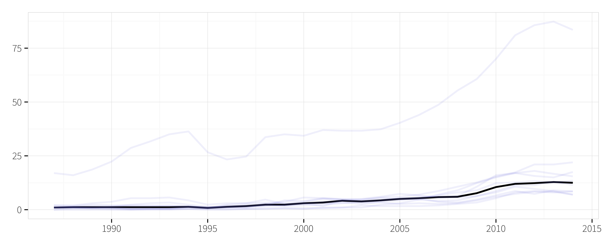
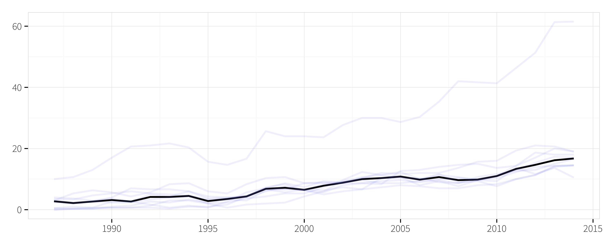
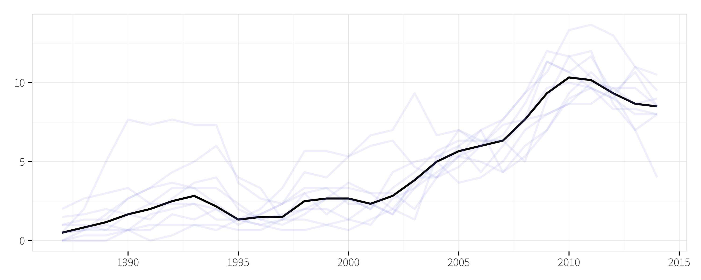

recognition
object
model
speech
control
associative
connectionist
analog
parallel
oriented
machine
reinforcement
relational
service
information
caching
access
technology
cells
architecture
query
xml
efficiently
stream
bounds
discriminate
views
field
schema
pattern
databases
management
neurons
computational
algorithm
approaches
support
performance
spatial
design
bayesian
analysis
multi
sparse
inference
functional
regression
dynamic
regular
adaptive
kernel
processing
imaging
networks
labeled
distributed
coding
detection
time
complexity

optimal
estimation
neural
sampling
ranking
graphs
mapreduce
variations
bandit
search

data
system
clustering
based
web
optimizing
spike
indexing
approach
joins

learns
models
algorithms
structured
gaussian
general
efficient
approximation
searches
features